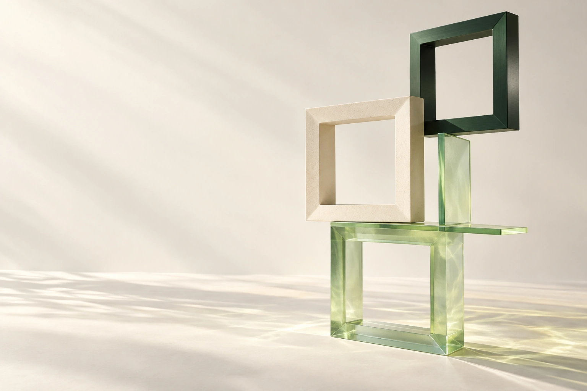

<!doctype html>
<html lang="en">
<meta charset="utf-8">
<meta name="viewport" content="width=device-width, initial-scale=1">
<title>Modular — README cover</title>
<link href="https://fonts.googleapis.com/css2?family=DM+Mono:wght@400;500&family=Manrope:wght@400;500;600;700;800&display=swap" rel="stylesheet">
<style>
  * { box-sizing: border-box; }
  body { margin: 0; background: #f7f6f0; color: #223126; }
  .cover { width: 1200px; height: 800px; position: relative; overflow: hidden; font-family: 'Manrope', sans-serif; }
  .art { position: absolute; inset: 0; width: 100%; height: 100%; object-fit: cover; }
  header { position: absolute; top: 54px; left: 64px; display: flex; align-items: center; gap: 15px; }
  .mark { width: 32px; height: 32px; border-radius: 9px; background: #223126; display: grid; place-items: center; transform: rotate(-8deg); }
  .mark::after { content: ''; width: 12px; height: 12px; border: 2px solid #def5b6; border-radius: 3px; transform: rotate(8deg); }
  .wordmark { font-size: 34px; font-weight: 800; letter-spacing: -2.5px; }
  h1 { position: absolute; top: 222px; left: 61px; margin: 0; font-size: 70px; line-height: 1.08; font-weight: 500; letter-spacing: -4.5px; }
  h1 span { display: block; }
  .description { position: absolute; top: 486px; left: 65px; margin: 0; font-size: 17px; line-height: 1.65; font-weight: 500; color: #4b5c4d; }
  footer { position: absolute; left: 65px; right: 65px; bottom: 39px; display: flex; justify-content: space-between; align-items: center; border-top: 1px solid #354f3333; padding-top: 20px; font: 11px 'DM Mono', monospace; letter-spacing: 1px; text-transform: uppercase; color: #52624f; }
  .steps { display: flex; gap: 26px; }
  .steps i { font-style: normal; color: #8a9c7e; margin-right: 9px; }

@media (max-width: 700px) {
  .cover { width: 680px; height: 1120px; background: #f5f1e8; }
  .art { width: 1020px; height: 680px; left: -340px; top: 440px; object-fit: cover; mask-image: linear-gradient(transparent, #000 3%); }
  header { top: 40px; left: 44px; }
  h1 { top: 124px; left: 41px; font-size: 67px; line-height: 1.06; letter-spacing: -4px; }
  .description { top: 371px; left: 45px; font-size: 17px; }
  footer { left: 45px; right: 45px; bottom: 25px; font-size: 11px; padding-top: 15px; }
  footer > span { display: none; }
}


</style>
<main class="cover">
  
  <header><div class="mark"></div><div class="wordmark">modular.</div></header>
  <h1><span>Model serving,</span><span>with room</span><span>to breathe.</span></h1>
  <p class="description">An open workspace for<br>exacting decisions.</p>
  <footer><div class="steps"><span><i>01</i>Model</span><span><i>02</i>Engine</span><span><i>03</i>Configure</span></div><span>Clarity in every choice</span></footer>
</main>
</html>
